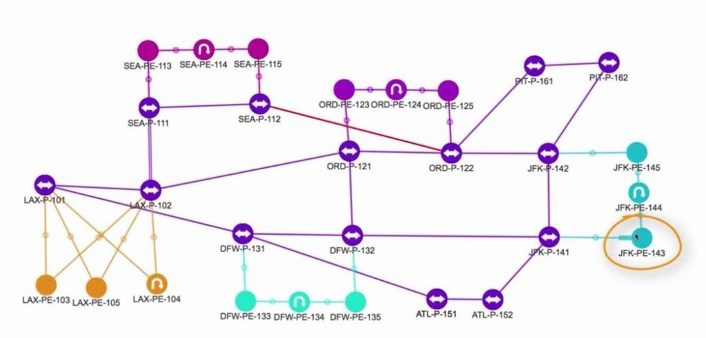

Ethernet անջատիչների անսարքությունների վերացում

Այս գլուխը կենտրոնանում է ստուգման գործընթացների և անսարքությունների վերացման վրա: Ստուգումը վերաբերում է ստուգման գործընթացին
որ ցանցն աշխատում է այնպես, ինչպես նախատեսված է: Անսարքությունների վերացումը (խնդիրների վերացում) վերաբերում է հետագա գործընթացին (երբ արդեն հաստատվել է, որ ցանցը չի աշխատում այնպես, ինչպես նախատեսված է)՝ բացահայտելու խնդիրների իրական պատճառները։
և դրանց վերացումը։
Ժամանակի ընթացքում CCENT և CCNA քննությունները հանդիպում են ավելի ու ավելի շատ հարցերի
ստուգում և անսարքությունների վերացում: Այս հարցերից յուրաքանչյուրը պահանջում է ցանցի ընդհանուր գիտելիքների կիրառում կոնկրետ խնդիրների նկատմամբ, այլ ոչ միայն տեսական գիտելիքների:
պատասխան՝ թվարկելով հիշված փաստերի ցանկը:
Որպեսզի պատրաստվեք անսարքությունների վերացման հարցերին պատասխանելուն, այս գիրքը, ինչպես նաև ICND2 գիրքը, քննարկում է այս թեման որպես
առանձին գլուխներ, ինչպես նաև ամբողջ գլուխներ: Նրանք ոչ միայն ապահովում են կոնֆիգուրացիա
և տարբեր շոու հրամանների ելքի օրինակներ, բայց նաև քննարկում է տարբեր հրամանների օգտագործումը՝ ստուգելու, թե ինչ է կատարվում, և եթե դա այն չէ, ինչ սպասվում էր, ապա ինչ ուղիներ փնտրելու խնդրի հիմնական պատճառը:
Այս գլխում քննարկվում են բազմաթիվ թեմաներ, որոնց մեծ մասն արդեն լուսաբանվել է 6-9-րդ գլուխներում: Գլուխը սկսվում է ցանցային խնդիրների վերացման հայեցակարգի քննարկմամբ, քանի որ սա գրքի առաջին գլուխն է, որն ամբողջությամբ վերաբերում է այս թեմային: Հետևյալ չորս հիմնական թեմաները քննարկվում են ստորև.
շատ կարևոր է Ethernet LAN-երի փորձարկման, խնդիրների լուծման ժամանակ:
• Տեղական ցանցի տոպոլոգիայի վերլուծություն՝ օգտագործելով COP արձանագրությունը:
• Անջատիչի վիճակի և ինտերֆեյսի վերլուծություն:
• Փոխանցման շրջանակների կանխատեսում անջատիչներով:
• VLAN-ների և VLAN կոճղերի վերլուծություն:
--------------------------------------------------------------------------------------------------------------------------------------------------------------------------------------------------------------------------------------------------------------------------------------------------------------------------------------------------------------------
Ցանցի փորձարկման և անսարքությունների վերացման սկզբունքներ
CCENT և CCNA քննությունները հաջող հանձնելու համար միայն տեսական գիտելիքները բավարար չեն, հարցերին պատասխանելու համար անհրաժեշտ են նաև որոշակի գործնական հմտություններ։
բարդ կիրառական հարցեր. Հարկ է նշել նաև, որ ատեստավորման քննության հարցերի բարդության աստիճանը տարբեր է։ Այս բաժինը նախ նայում է տարբեր տեսակի հարցերի, որոնք կարող են լինել CCNA քննության ժամանակ, այնուհետև
Տրված են ընդհանուր մեկնաբանություններ անսարքությունների վերացման մեթոդների վերաբերյալ:
Այս գրքի ներածությունը հակիրճ նկարագրում է այս գլխում ընդգրկված քննական հարցերի մի քանի տարբեր տեսակներ՝ «Simulation Jab Sim Labs», «Simlets» և «Multiple Choices»:
(Բազմակի ընտրություն - MS):
Լաբորատորիաներում և սիմլետներում օգտագործվում է էմուլյատոր, որը մոդելավորում է երթուղիչների և անջատիչների հրամանի տող ինտերֆեյսը: Լաբորատոր աշխատանքում
դուք պետք է խնդիր գտնեք կոնֆիգուրացիայի մեջ և շտկեք այն: Պահանջվում է symlets-ում
ստուգեք ցանցի ընթացիկ աշխատանքը, այնուհետև պատասխանեք հարցերին բազմակի ընտրությամբ
ընտրություն իր աշխատանքի վերաբերյալ: Բազմակի ընտրության հարցերը պարզապես հարցեր են
մի քանի պատասխաններով, որոնցից պետք է ընտրել ճիշտը: